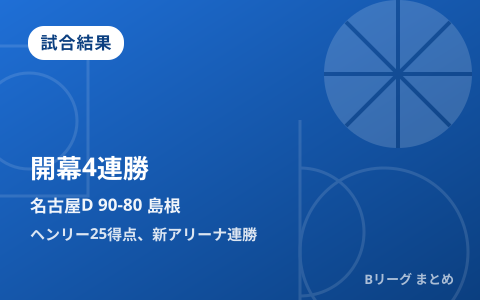

名古屋D、開幕から無傷の4連勝 新アリーナの島根に連勝 ヘンリー25得点、齋藤拓実16得点9アシスト

10月4日、大規模改修を終えた新アリーナ「バンダイナムコアリーナ松江」で、島根スサノオマジックとのB.PREMIERホーム開幕カード第2戦が行われました。前日の第1戦に続いて名古屋ダイヤモンドドルフィンズが90-80で勝利し、開幕から無傷の4連勝をマーク。5000人を超える観客が詰めかけた新アリーナでの初勝利を狙った島根は、2連敗で通算2勝2敗となりました。
前半で主導権、名古屋Dが1Qから突き放す
試合は名古屋Dが第1クォーターから26-10と大きくリードを奪う立ち上がりとなりました。前半終了時点で47-27まで差を広げた名古屋Dは、後半も第3クォーターで23点を加えるなどリードを守り切り、最終的に90-80で島根を振り切りました。
| クォーター | 島根 | 名古屋D |
|---|---|---|
| 1Q | 10 | 26 |
| 2Q | 17 | 21 |
| 3Q | 30 | 23 |
| 4Q | 23 | 20 |
| 合計 | 80 | 90 |
ヘンリーが25得点、齋藤拓実は16得点9アシストでチームを牽引
勝利した名古屋Dは、アーロン・ヘンリーがフィールドゴール13本中10本と高い確率で沈め、25得点5リバウンド5アシストのゲームハイを記録。司令塔の齋藤拓実も16得点9アシストと好調で、ライアン・ルーサーが16得点5リバウンド、スコット・エサトンが15得点6リバウンドと、主力4人が二桁得点で続きました。
| 選手（名古屋D） | 成績 |
|---|---|
| アーロン・ヘンリー | 25得点・5リバウンド・5アシスト |
| 齋藤拓実 | 16得点・9アシスト |
| ライアン・ルーサー | 16得点・5リバウンド |
| スコット・エサトン | 15得点・6リバウンド |
島根は新アリーナ初勝利ならず ニック・ケイらが奮闘も届かず
敗れた島根は、ニック・ケイが約34分の出場で13得点8リバウンド4アシスト2スティールと全方位で貢献したものの、前半の大量リードを最後まで覆せませんでした。ジョーダン・ヒースが16得点、岡田侑大が15得点を挙げて第3クォーターには猛追を見せましたが、新アリーナでの初勝利は次節以降に持ち越しとなりました。
| 選手（島根） | 成績 |
|---|---|
| ジョーダン・ヒース | 16得点 |
| 岡田侑大 | 15得点 |
| ニック・ケイ | 13得点・8リバウンド・4アシスト・2スティール |
名古屋Dは開幕4連勝、優勝争いへ弾みをつける
今回の会場「バンダイナムコアリーナ松江」は、松江市総合体育館を大規模改修して誕生した新アリーナで、今節が島根にとってのホーム開幕カードでした。名古屋Dは前日の第1戦（85-73）に続く勝利で開幕4連勝とし、B.PREMIER初年度を好スタートで走っています。前日に行われた富山の新アリーナ開幕戦の様子はこちらの記事、新リーグ「B.PREMIER」の開幕概要はこちらの記事でそれぞれ整理しています。
Q. 名古屋Dと島根はこのあとも連戦が続く？
A. 今節は同一会場での連戦（第1戦10月3日・第2戦10月4日）でした。両チームの次節以降の日程はB.LEAGUE公式の日程ページでご確認ください。
出典：バスケットボールキング「名古屋Dが無傷のBプレミア開幕4連勝…ヘンリー25得点、敵地で島根を撃破」／山陰中央新報「島根スサノオマジック ホーム開幕戦は黒星 名古屋Ｄに敗れる」／TSKさんいん中央テレビ「Bプレミア・島根スサノオマジック 名古屋Ｄに連敗『新アリーナ初勝利』はお預けに」ほか
https://basketballking.jp/news/japan/20261004/636004.html
https://news.yahoo.co.jp/articles/eb330d76a9fe2e246b09f1fc8c631cc7fc7b8c14
https://news.yahoo.co.jp/articles/79a657c39e2d22b5270479088d8727ad03588f91